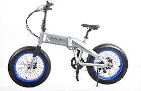
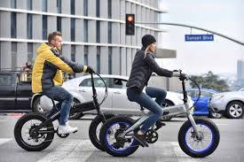

SONDORS
The Magic
 The Sondors Fold X, especially in matte black. While a bike like the RadMini might actually be a better and more utilitarian appliance, the Fold X is styled so much better. The hidden, frame-installed battery and the ultra styled frame are absolutely superior to any of the Rad Power bikes. It's a cruiser. Don't be mistaken, this is not a hardcore commuter. Going 20 plus miles on this bike is absolutely murder on your body. It's just not shaped right to allow for long seat times. It's way better on the boardwalk and cruising downtown.
The Sondors Fold X, especially in matte black. While a bike like the RadMini might actually be a better and more utilitarian appliance, the Fold X is styled so much better. The hidden, frame-installed battery and the ultra styled frame are absolutely superior to any of the Rad Power bikes. It's a cruiser. Don't be mistaken, this is not a hardcore commuter. Going 20 plus miles on this bike is absolutely murder on your body. It's just not shaped right to allow for long seat times. It's way better on the boardwalk and cruising downtown.
Functionality

The bike itself features some cool functionality. The major selling point is that it folds. It shrinks so much in size when folded. It will absolutely fit in a regular car. It's about 60 pounds so it's pretty heavy but it's manageable.The bike LCD screen is able to display basic information such as MPH, an overall odometer and some other metrics that might be useful. Also, the battery locks inside the body. It comes with its own key. An average thief would have an absolute conniption trying to steal your battery.
An Overview of the Sondors Performance and User Experience in the Ride
Improved Features
- 2019 Fold X frame is larger, and of better quality than the earliest launch model
- 2019 Fold X now routes "unsightly" cables through the frame rather than underneath it
- 2019 Fold X throttle is different than earlier models
Assembly
Honestly though, give the assembly a shot. It's fairly well documented (albeit somewhat outdated) on YouTube here: https://www.youtube.com/watch?v=63h8f-KxwI0.
Customer Service

Sondors touts a 90-day warranty
CONS
Unfortunately this bike has no lights in any configuration. It DOES have an optional rear-mounted rack but that's about it. Not a lot to choose from and that's a shame. I've added my own lights for night riding but they are the furthest thing from what I would conside "integrated." The LCD has some sort of light support too but nothing officially from Sondors as of this post.